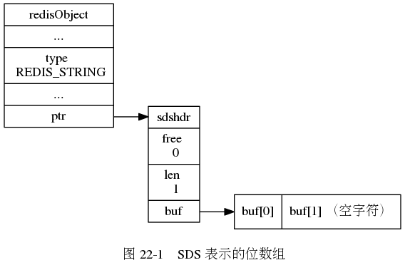
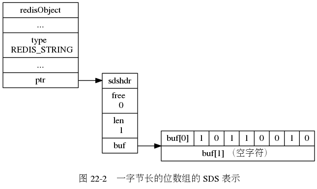
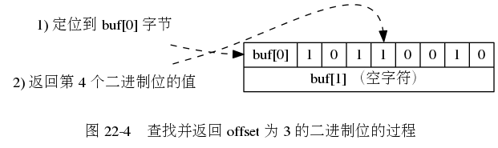
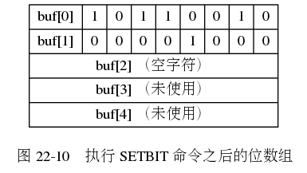

无须扩展的 SETBIT 命令。
SETBIT
需要进行扩展的 SETBIT 命令。

第 21 章： 排序
第 23 章： 慢查询日志
Enter search terms or a module, class or function name.
![digraph {
label = "\n 图 22-3 三字节长的位数组的 SDS 表示";
rankdir = LR;
//
node [shape = record];
redisObject [label = " redisObject | ... | type \n REDIS_STRING | ... | <ptr> ptr "];
sds [label = " <head> sdshdr | free \n 0 | len \n 3 | <buf> buf "];
buf [label = " { buf[0] | 1 | 0 | 1 | 0 | 0 | 1 | 0 | 1 } | { buf[1] | 1 | 1 | 0 | 0 | 0 | 0 | 1 | 1 } | { buf[2] | 0 | 0 | 0 | 0 | 1 | 1 | 1 | 1 } | { buf[3] （空字符） } "];
//
redisObject:ptr -> sds:head;
sds:buf -> buf;
}](_images/graphviz-52abb89ca49de2c84c04416ade157616077e0626.png)
![digraph {
label = "\n 图 22-5 查找并返回 offset 为 10 的二进制位的过程";
rankdir = LR;
//
node [shape = record];
buf [label = " { buf[0] | 1 | 0 | 1 | 0 | 0 | 1 | 0 | 1 } | { <buf1> buf[1] | 1 | 1 | <bit> 0 | 0 | 0 | 0 | 1 | 1 } | { buf[2] | 0 | 0 | 0 | 0 | 1 | 1 | 1 | 1 } | { buf[3] | 0 | 0 | 0 | 0 | 0 | 0 | 0 | 0 } "];
node [shape = plaintext];
point_to_buf [label = "1） 定位到 buf[1] 字节"];
point_to_bit [label = "2） 返回第 3 个二进制位的值"];
//
edge [style = dashed];
point_to_buf -> buf:buf1;
point_to_bit -> buf:bit;
}](_images/graphviz-3a11dc81cb45b0791f28c01c2fd5c805a0c0d60c.png)
![digraph {
label = "\n 图 22-6 SETBIT 命令的执行过程";
//
node [shape = plaintext];
point_to_byte [label = "1） 定位到 buf[0] 字节"];
point_to_bit [label = "2）定位到 buf[0] 字节的第 2 个二进制位 \n 将位现在的值 0 保存到 oldvalue 变量 \n 然后将位的值设置为 1 "];
buf [label = " { { <byte> buf[0] | 1 | <bit> 0 | 1 | 1 | 0 | 0 | 1 | 0 } | { buf[1] （空字符） } } ", shape = record];
//
edge [style = dashed];
point_to_byte -> buf:byte;
point_to_bit -> buf:bit;
}](_images/graphviz-1aac5ce203184eb82535c67eb11255a59e5022a6.png)
![digraph {
label = "\n 图 22-8 扩展空间之后的位数组";
rankdir = LR;
//
node [shape = record];
redisObject [label = " redisObject | ... | type \n REDIS_STRING | ... | <ptr> ptr "];
sds [label = " <head> sdshdr | free \n 2 | len \n 2 | <buf> buf "];
buf [label = " { buf[0] | 1 | 0 | 1 | 1 | 0 | 0 | 1 | 0 } | { buf[1] | 0 | 0 | 0 | 0 | 0 | 0 | 0 | 0 } | { buf[2] （空字符） } | { buf[3] （未使用） } | { buf[4] （未使用） } "];
//
redisObject:ptr -> sds:head;
sds:buf -> buf;
}](_images/graphviz-f7f8465c6205b8c67bec7f091e0fe773f1223f80.png)
![digraph {
label = "\n 图 22-9 SETBIT 命令的执行过程";
//
node [shape = plaintext];
point_to_byte [label = "1）定位到 buf[1] 字节"];
point_yo_bit [label = "2）定位到 buf[1] 字节的第 5 个二进制位 \n 首先将位现在的值 0 保存到 oldvalue 变量 \n 然后将位的值设置为 1 "];
node [shape = record];
buf [label = " { { buf[0] | 1 | 0 | 1 | 1 | 0 | 0 | 1 | 0 } | { <byte> buf[1] | 0 | 0 | 0 | 0 | <bit> 0 | 0 | 0 | 0 } | { buf[2] （空字符） } | { buf[3] （未使用） } | { buf[4] （未使用） } } "];
//
edge [style = dashed];
point_to_byte -> buf:byte;
point_yo_bit -> buf:bit;
}](_images/graphviz-e8d9b42919a10d2205cb57fca78dc87eaf816e8d.png)